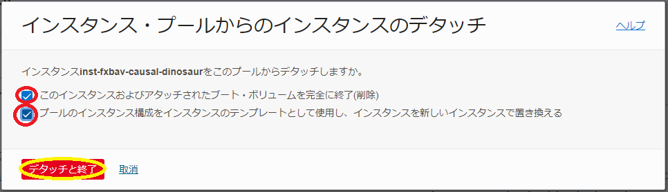

0. 概要
HPC/GPUクラスタのノード数を増減させたり既存の計算/GPUノードを置き換える場合、これらのノードが通常同一の クラスタ・ネットワーク に接続されている必要があることから、 クラスタ・ネットワーク を使用しないインスタンスとは異なる手順が必要になります。
そこで本テクニカルTipsでは、これらの手順を以下のシナリオに分けて解説します。
- ノード数を減らす
- ノード数を増やす
- ノードを置き換える
1. ノード数を減らす
1-0. 概要
ノード数を減らす場合、終了するノードを OCI に任せる方法と終了するノードを指定する方法があります。
終了するノードを OCI に任せる方法は、 クラスタ・ネットワーク に接続するどのノードを終了しても構わないが複数のノードを一度に減らす際に有効で、最も作成日の古いものから終了の対象として選択されます。
これに対して終了するノードを指定する方法は、一度に終了させるノードは少数だが終了するノードを指定する必要がある際に有効です。
1-1. 終了するノードをOCIに任せる方法
OCIコンソールメニューから コンピュート → クラスタ・ネットワーク を選択し、表示される以下画面で、ノード数を減らす クラスタ・ネットワーク をクリックします。
次に、表示される以下画面で、 編集 ボタンをクリックします。
次に、表示される以下 クラスタ・ネットワークの編集 サイドバーで、 インスタンス数 フィールドに減らした後の新しいノード数を入力し 変更の保存 ボタンをクリックします。
表示される以下 クラスタ・ネットワーク・インスタンス・プール ウィンドウで、左上のステータスが スケーリング中 → 完了 と遷移し、
同じウィンドウ下方の以下 インスタンス・プール フィールドで、 インスタンス数 が新しいノード数に変わっていることを確認出来れば、作業完了です。
1-2. 終了するノードを指定する方法
OCIコンソールメニューから コンピュート → クラスタ・ネットワーク を選択し、表示される以下画面で、ノード数を減らす クラスタ・ネットワーク をクリックします。
次に、表示される以下画面の インスタンス・プール フィールドで、 クラスタ・ネットワーク の作成に伴い作成された インスタンス・プール をクリックします。
次に、表示される以下画面左下の アタッチされたインスタンス メニューをクリックします。
次に、表示される画面の以下 アタッチされたインスタンス フィールドで、終了するインスタンスのメニューから インスタンスのデタッチ メニューをクリックします。
次に、表示される以下画面で、 このインスタンスおよびアタッチされたブート・ボリュームを完全に終了（削除） チェックボックスをチェックし、 デタッチと終了 ボタンをクリックします。
OCIコンソールメニューから コンピュート → インスタンス とメニューを辿り、デタッチしたインスタンスの終了を確認出来れば、作業完了です。
2. ノード数を増やす
2-0. 概要
ノード数を増やす場合、通常追加するノードは既存のノードと同じ クラスタ・ネットワーク に接続する必要があります。
この際、同一の クラスタ・ネットワーク に追加できるその時点で利用可能なインスタンスが有限であることから、既存の クラスタ・ネットワーク に接続するノード数の増加は、必ずしも成功するわけではない点に留意する必要があります。
もしノード数増加が失敗する場合は、 OCI HPCテクニカルTips集 の クラスタ・ネットワークに接続する計算/GPUノードデプロイ時の問題判別方法 を参照し、その原因特定と対応を検討します。
2-1. ノード数を増やす方法
OCIコンソールメニューから コンピュート → クラスタ・ネットワーク を選択し、表示される以下画面で、ノード数を増やす クラスタ・ネットワーク をクリックします。
次に、表示される以下画面で、 編集 ボタンをクリックします。
次に、表示される以下 クラスタ・ネットワークの編集 サイドバーで、 インスタンス数 フィールドに増やした後の新しいノード数を入力し 変更の保存 ボタンをクリックします。
表示される以下 クラスタ・ネットワーク・インスタンス・プール ウィンドウで、左上のステータスが スケーリング中 → 完了 と遷移し、
同じウィンドウ下方の以下 インスタンス・プール フィールドで、 インスタンス数 が新しいノード数に変わっていることを確認出来れば、作業完了です。
3. ノードを置き換える
3-0. 概要
ノードを置き換える場合、置き換える新しいノードが受けるノード数を増やす場合と同様の 2-0. 概要 に記載の制約から、必ずしも成功するわけではない点に留意します。
3-1. ノードを置き換える方法
OCIコンソールメニューから コンピュート → クラスタ・ネットワーク を選択し、表示される以下画面で、置き換えられるノードが接続する クラスタ・ネットワーク をクリックします。
次に、表示される以下画面の インスタンス・プール フィールドで、 クラスタ・ネットワーク の作成に伴い作成された インスタンス・プール をクリックします。
次に、表示される以下画面左下の アタッチされたインスタンス メニューをクリックします。
次に、表示される画面の以下 アタッチされたインスタンス フィールドで、置き換えるインスタンスのメニューから インスタンスのデタッチ メニューをクリックします。
次に、表示される以下画面で、 このインスタンスおよびアタッチされたブート・ボリュームを完全に終了（削除） と プールのインスタンス構成をインスタンスのテンプレートとして使用し、インスタンスを新しいインスタンスで置き換える チェックボックスをチェックし、 デタッチと終了 ボタンをクリックします。

OCIコンソールメニューから コンピュート → インスタンス とメニューを辿り、デタッチしたインスタンスが終了し、新たなインスタンスが作成されれば、作業完了です。